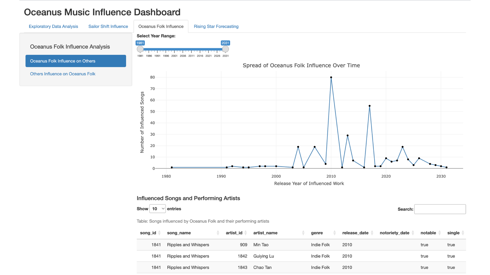

The Oceanus Music Influence Dashboard is an interactive Shiny web application designed to explore and analyze musical influences within the fictional world of Oceanus Folk music. Through a blend of network analysis, exploratory data visualization, and forecasting tools, the app offers music analysts, researchers, and enthusiasts a novel lens to uncover deep-rooted connections among artists, genres, and songs over time.
Users can examine the genre distribution of Oceanus Folk music, spot trends in collaborations and emerging artists, and track the evolution of significant artists like Sailor Shift within their network with this dashboard. The program provides deep insights from complex musical data in an easy-to-understand and visually appealing way by combining interactive filters, edge-node analysis, and PCA clustering.
Motivation
The goal of this project is to model and examine the complex evolution of musical genres and artist relationships, drawing inspiration from the complexity of real-world music ecosystems. Oceanus Folk, a genre experiencing dynamic growth and genre blending, serves as the central node to explore influence propagation, cross-genre collaborations, and artist trajectory predictions. The goal is to create a comprehensive decision-support tool for talent scouts and music researchers.
Methodology
The dashboard was developed using the R Shiny framework and built on a JSON-based musical knowledge graph. The methodology involved the following key steps:
Data Parsing: JSON data containing nodes (songs, artists, labels) and links (influences, roles) was parsed using jsonlite and tidygraph.
Data Cleaning & Transformation: The dataset was cleaned with janitor and pre-processed into tidy tables for songs, edges, and nodes.
Interactive Visualizations: Plots were rendered using ggplot2, plotly, and visNetwork to enable user-driven analysis.
User Inputs: Select inputs like year sliders and genre filters dynamically update the content.
Forecasting & Clustering: PCA and radar plots were used to identify potential rising stars based on musical features and influence scores.
Storyboard
Overview
The application is structured into three major analytical modules: Exploratory Data Analysis, Influence Network Exploration, and Rising Star Forecasting. Each module contains multiple sub-tabs that enable users to drill down into specific insights such as edge type distributions, node classifications, genre trends, influence networks, and artist projections.
The user journey begins with a broad exploration of data structure — understanding the relationships (edges), entities (nodes), and genre presence. Users can then move on to specialized influence networks focused on Sailor Shift and Oceanus Folk. Lastly, the application provides forward-looking visualizations to discover promising rising stars.
A consistent layout is maintained across all tabs with sidebar selectors (year range, genre count, artist cluster) and responsive main panels that reactively update visualizations based on user input. This ensures seamless user experience and high analytical flexibility.
Image Dashboard Explanations
1. Edge and Node Type Distribution (EDA Tabs 5.1 & 5.2)
In the “Edge Type Count” tab, users can observe the frequency of relationship types between entities in the knowledge graph. For instance, PerformerOf is the most dominant edge type, indicating a high number of artist-to-song relationships. This allows users to infer which types of musical connections (e.g., lyrical reference, sampling, performance) are most prevalent and thus potentially more influential in shaping genre evolution.
Fig1. Edge Type Count
Users can observe the split of node types, including Person, Song, Album, and MusicalGroup, under the “Node Type Count” tab. This helps users in comprehending the makeup of the dataset and concentrating their investigation on particular entity categories, whether they are tracking individual artists, researching album-level influence, or examining label activities.
Fig2. Node Type Count
Users can interact with the year range slider to filter out nodes and edges based on release periods, which helps in isolating structural trends across time (e.g., growing presence of RecordLabel nodes in the 2020s).
2. Genre Distribution of Songs (EDA Tab 5.3)
This bar chart allows users to examine the overall landscape of musical genres in the dataset. Users can place Oceanus Folk in relation to other genres by determining which genres are most represented, such as Dream Pop, Indie Folk, and Synthwave. This view can be used to evaluate niche representation, variety, and genre dominance across time by users conducting comparative genre analysis.
To refine this view, users can adjust the year range filter to see how genre dominance changes across time and use the Top N Genres input box to focus on the most relevant genres for their analysis.
Fig3. Genre Distribution of Songs
3. Oceanus Folk Song Release Trend (Tab 5.4)
This time series line graph displays the number of Oceanus Folk songs released per year, offering a lens into the temporal evolution of the genre. Users can use this chart to detect creative peaks, observe genre maturation, or identify influential periods (e.g., early 2010s surge).
Using the year range slider, users can focus on specific historical windows (e.g., post-2015 decline or pre-2000 emergence) to contextualize Oceanus Folk’s rise and fall in relation to external events or shifts in the music scene.
Fig4. Oceanus Folk Song Release Trend
4. Genres Influenced by Oceanus Folk (Tab 5.5)
This bar chart visualizes the top genres that were influenced by Oceanus Folk, emphasizing the genre’s downstream cultural impact. Users can use this insight to understand how Oceanus Folk has shaped other genres like Indie Folk, Synthwave, and Dream Pop.
The year range filter again provides the ability to explore how Oceanus Folk’s influence evolves temporally, helping users distinguish between short-term spikes and long-term influence patterns.
This section presents two interactive network graphs. The left graph shows who influenced Sailor Shift and who she influenced, helping users track the bi-directional artistic relationships surrounding her. The right graph expands on this by showing how Sailor’s collaborators influenced or were influenced by others, uncovering broader influence pathways.
Users can interact with the node selection dropdown to focus on specific artists and explore sub-networks, which aids in investigating how artistic styles and collaborations have diffused through the genre network.
Fig6. Sailor Shift Influence Network
6. Oceanus Folk’s Influence Over Time
This section helps users track the spread of Oceanus Folk’s influence over time. The line plot visualizes the number of songs influenced by Oceanus Folk per year, while the accompanying data table offers detailed metadata including song names, artist names, genres, and release years.
Users can apply the year range slider to examine specific decades or artistic periods. The searchable data table enables users to filter for specific genres or artists for micro-level investigation, complementing macro trends with concrete examples.

Fig7. Oceanus Folk’s Influence Over Time
7. Genres That Influenced Oceanus Folk
This radial network graph reveals which genres contributed to shaping Oceanus Folk. It helps users analyze the genre roots of Oceanus Folk, identifying key contributors such as Jazz Surf Rock, Synthpop, or Alternative Rock.
Below, the influence network diagram visualizes the entire graph of influences feeding into Oceanus Folk’s evolution. The dropdown selector allows users to highlight specific nodes, facilitating focused exploration of upstream artistic and genre pathways.
Fig8. Genres That Influenced Oceanus Folk
8. Rising Star Forecasting Module
This module provides predictive insights into future rising stars based on their genre alignment, influence connectivity, and release timelines. The timeline scatter plot maps notable artists’ upcoming releases, allowing users to assess genre engagement over time. The radar charts on the right summarize individual artist strengths across key metrics (e.g., Oceanus Folk alignment, collaborations, data stability).
The PCA clustering plot groups artists by shared characteristics, helping users identify distinct artist segments. Lastly, the network graph at the bottom right links rising artists to their works and collaborators, with a color-coded legend for node types.
Users can select specific artists or clusters to refine the analysis, making this module particularly useful for identifying under-the-radar artists or validating early-stage talent discovery.
Fig9. Rising Star Forecasting Module
Skeleton Code for Shiny App
The Oceanus Music Influence Dashboard skeleton is a modular and scalable Shiny application designed to support interactive exploration of musical influence data. The structure provides a solid foundation for building a fully functional app by establishing key user interface elements, logical data partitions, and reactive components. It is streamlined to allow seamless expansion for more complex analytics and visualizations.
The skeleton organizes the user experience into four primary functional modules: Exploratory Data Analysis, Sailor Shift Influence, Oceanus Folk Influence, and Rising Star Forecasting. Each module is represented as a tab in the user interface, with additional sub-tabs and visualizations integrated using navlistPanel, plotOutput, plotlyOutput, and visNetworkOutput.
Reactivity is introduced via sliderInput, numericInput, and tab-level selectors, allowing users to interact with year ranges and genre limits. This structure helps in filtering data dynamically, enabling a user-friendly and insightful exploration of trends, relationships, and patterns across various dimensions of the music dataset.
Show the code
# Load Packagespacman::p_load(tidyverse, jsonlite, plotly, visNetwork, DT, shiny)# Load Datakg <-fromJSON("MC1_release/MC1_graph.json")nodes_tbl <-as_tibble(kg$nodes)edges_tbl <-as_tibble(kg$links)# Preprocessing (ID Mapping, Node & Edge Setup)id_map <-tibble(id = nodes_tbl$id, index =seq_len(nrow(nodes_tbl)))edges_tbl <- edges_tbl %>%left_join(id_map, by =c("source"="id")) %>%rename(from = index) %>%left_join(id_map, by =c("target"="id")) %>%rename(to = index)# Define UIui <-fluidPage(titlePanel("Oceanus Music Influence Dashboard"),tabsetPanel(id ="main_tab",tabPanel("Exploratory Data Analysis",fluidRow(column(3,navlistPanel(tabPanel("Edge Type Count"),tabPanel("Node Type Count"),tabPanel("Genre Distribution of Songs"),tabPanel("Oceanus Folk Song Release Trend"),tabPanel("Genres Influenced by Oceanus Folk") ),sliderInput("eda_year_range", "Year Range:", 1980, 2035, c(1990, 2030)),numericInput("top_n_genres", "Top N Genres:", 10, min =1, max =50) ),column(9,uiOutput("eda_plot_output") ) ) ),tabPanel("Sailor Shift Influence",fluidRow(column(6, visNetworkOutput("sailor_network_1")),column(6, visNetworkOutput("sailor_network_2")) ) ),tabPanel("Oceanus Folk Influence",navlistPanel(widths =c(3, 9),tabPanel("Oceanus Folk Influence on Others",sliderInput("year_range", "Year Range:", 1980, 2035, c(1990, 2030)),plotlyOutput("of_influence_plot"),DTOutput("of_influenced_table") ),tabPanel("Others Influence on Oceanus Folk",visNetworkOutput("of_inward_genre_plot", height ="300px"),visNetworkOutput("of_network_plot", height ="500px") ) ) ),tabPanel("Rising Star Forecasting",fluidRow(column(4,selectInput("select_artist", "Select Artist", choices =NULL),selectInput("select_cluster", "Select Cluster", choices =NULL) ),column(8,plotOutput("timeline_plot"),plotOutput("pca_plot"),visNetworkOutput("rising_network") ) ) ) ))# Define Serverserver <-function(input, output, session) {# Reactive data filter (placeholder) filtered_data <-reactive({# your reactive logictibble(x =1:10, y =rnorm(10)) })# Dynamic EDA UI output output$eda_plot_output <-renderUI({switch(input$eda_subtab,"Edge Type Count"=plotOutput("edge_type_plot"),"Node Type Count"=plotOutput("node_type_plot"),"Genre Distribution of Songs"=plotOutput("genre_plot"),"Oceanus Folk Song Release Trend"=plotOutput("release_trend_plot"),"Genres Influenced by Oceanus Folk"=plotOutput("influenced_genres_plot") ) })# Sample EDA Outputs output$edge_type_plot <-renderPlot({ggplot(edges_tbl, aes(y =`Edge Type`)) +geom_bar(fill ="steelblue") +theme_minimal() }) output$node_type_plot <-renderPlot({ggplot(nodes_tbl, aes(y =`Node Type`)) +geom_bar(fill ="orchid") +theme_minimal() }) output$genre_plot <-renderPlot({ nodes_tbl %>%filter(`Node Type`=="Song") %>%count(genre, sort =TRUE) %>%head(input$top_n_genres) %>%ggplot(aes(x =reorder(genre, n), y = n)) +geom_col(fill ="tomato") +coord_flip() +theme_minimal() })# Placeholder for Oceanus Folk Influence Timeline output$of_influence_plot <-renderPlotly({plot_ly(data =filtered_data(), x =~x, y =~y, type ='scatter', mode ='lines') })# Placeholder for Network Visualizations output$sailor_network_1 <-renderVisNetwork({ visNetwork(nodes_tbl[1:10, ], edges_tbl[1:10, ]) }) output$sailor_network_2 <-renderVisNetwork({ visNetwork(nodes_tbl[1:10, ], edges_tbl[1:10, ]) })# Placeholder for Data Table output$of_influenced_table <-renderDT({datatable(head(nodes_tbl), options =list(pageLength =5)) })# Placeholder for inward genre influence network output$of_inward_genre_plot <-renderVisNetwork({visNetwork(nodes_tbl[1:10, ], edges_tbl[1:10, ]) }) output$of_network_plot <-renderVisNetwork({visNetwork(nodes_tbl[1:20, ], edges_tbl[1:20, ]) })# Rising Star Forecasting Placeholders output$timeline_plot <-renderPlot({ plot(1:10, rnorm(10), type ="b") }) output$pca_plot <-renderPlot({ plot(prcomp(matrix(rnorm(100), ncol =10))$x) }) output$rising_network <-renderVisNetwork({visNetwork(nodes_tbl[1:15, ], edges_tbl[1:15, ]) })}# Run AppshinyApp(ui, server)
Conclusion
The Oceanus Music Influence Dashboard demonstrates how interactive data visualization can transform complex, interconnected musical data into actionable insights. By leveraging Shiny’s capabilities, the application brings together graph-based structures, temporal patterns, genre distributions, and predictive analytics in a single, user-friendly interface. Each module within the dashboard provides users with targeted tools to explore and understand the influence dynamics shaping the fictional Oceanus Folk genre and its surrounding ecosystem.
The dashboard’s modular design and interactive controls enable users to perform both exploratory and precise analyses, whether they are tracking the musical backgrounds of Sailor Shift, assessing the impact of Oceanus Folk on other genres, or predicting future stars in the rapidly evolving music landscape. The app is flexible for a range of analytical objectives, including trend analysis, talent discovery, and academic investigation, according to its time, genre, and artist filters.
In terms of the future, this dashboard offers an adaptable framework for growth. The analytical capacity of the dashboard could be further increased by adding real-time datasets or integrating machine learning for influence prediction. In the end, this project demonstrates how design, data, and storytelling can come together to provide fresh insights into the changing story of music.